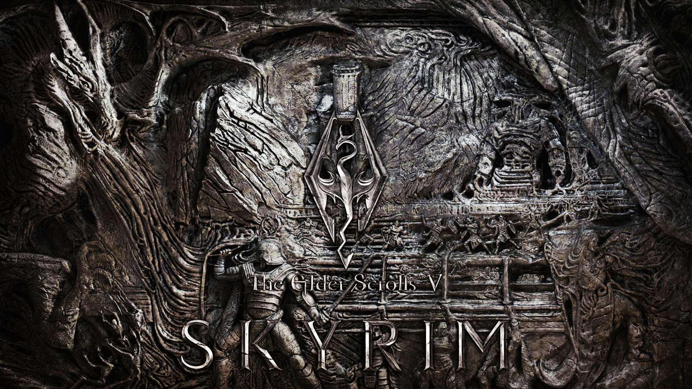

The Elder Scrolls V: Skyrim
What is Skyrim?
The Elder Scrolls V: Skyrim is an action role-playing video game developed by Bethesda Game Studios and published by Bethesda Softworks.
What's the story?
Skyrim's is based on the players character, the Dragonborn trying to save the world from an evil dragon named Alduin. along the way a massive range of quests and side activities are available to add variety and new items into the game for your character to use.
So how do I make it better?
You can install a massive variety of mods from website like nexus or steam to help make the game better. you can install mods for more quests, to make the game better looking, add or restyle weapons armor and other objects in the game and many more things. a particular mod changes the dragons to look like my little pony characters (see below). another mod, Falskaar adds an entirely new island to the game witth its own characters quests and voice actors.


Still not pumped?
Have a little look a the trailer below, if you still aren't excited about the game then there is no reason for you to continue being on this page